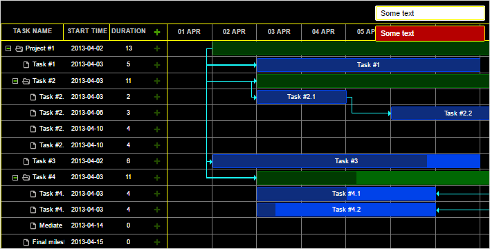
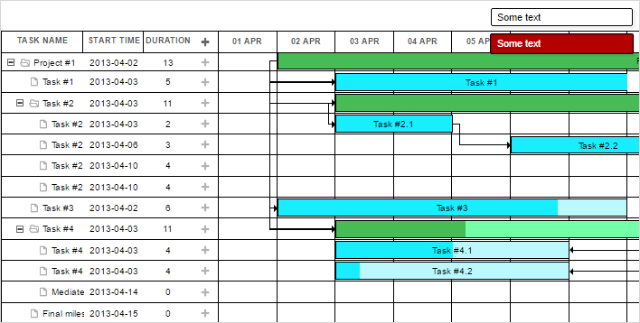

Accessibility is an important and necessary standard for modern web applications. There's a set of various techniques that allow making an application or a web site handier to use or work with.
To make an easier access and interaction with DHTMLXGantt for people with disabilities, the component contains a set of accessibility features:
DHTMLXGantt provides WAI-ARIA support that implies the use of special attributes in the component's markup. These are additional attributes which make the component recognizable for screen readers.
You can find more information in the official specification of WAI-ARIA.
WAI-ARIA attributes in Gantt are enabled by default, to disable them you can use the wai_aria_attributes property with the false value:
gantt.config.wai_aria_attributes = true;
This technique implies providing access to all functionality of an application via the corresponding keys and key combinations instead of navigating through an application with a mouse pointer.
You will find the detailed information in the Keyboard Navigation article.
DHTMLXGantt supports a theme that uses contrasting colors which make the app's interface more distinct and easier to see. The high-contrast theme will be helpful for people with special or particular visual needs.
There are two variants of contrast theme available:

<link rel="stylesheet" href="../../codebase/dhtmlxgantt_contrast_black.css"
type="text/css" media="screen" title="no title" charset="utf-8">
Related sample: High contrast theme - Black

<link rel="stylesheet" href="../../codebase/dhtmlxgantt_contrast_white.css"
type="text/css" media="screen" title="no title" charset="utf-8">
Related sample: High contrast theme - White
Back to top